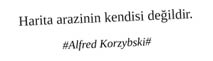

Foursquare Profesyonelleri

Harita zemininde hayat bulan tekdüze, tek boyutlu hayatların hikâyesidir, hayata check-in olarak yaşayan profesyoneller yani Foursquare profesyonellerinin hikâyesi
“Dağlar denize dik uzandığından, bu bölgede denizin etkisi iç kesimlere kadar ulaşır. Yaz aylarında ise bu kıyılarda kuraklık hâkim konuma geçer...”